01 Overview
3 Weeks, Fall 2017
iMovie, Adobe After Effects, Twine, Other CUI modeling Software
CUI Design and Modeling, Script Development
This project was part of my Beginner Interaction Design Studio. Teams were given the ability to select a domain from a shortlist.
Design a conversational user interface for the retail domain
This project was not market tested but it made me super interested in Conversation Design - I'm taking a class on it as we speak!
02 Solution
The convenience of online shopping has stagnated the number of in-store shoppers.
Our goal was two-fold:
01 to get more shoppers in stores
02 to make the shopping experience more enjoyable
concept video
Miranda is a conversational user interface that reinvigorates the joy of in-store shopping by building an experience that elevates department stores.
01 personalizing the shopping experience for the customer
02 making inventory management + customer service easier for floor associates
model visuals
The CUI serves as the "front stage" handling logistical concerns while the stylist manages the "back stage" or the customer relationship.
03 Approach
voice based competitor analysis
Prior to building a CUI, our team took a deep dive into the current market and features that make products stand out over others. We looked at chatbots and in-home devices, such as Alexa and Siri.

ethnographic research
Our team split up and spoke with customers at malls and customers in the process of making online shopping decisions to understand where in-store shopping is lacking.
current retail cui(s)
Many retailers have already begun to employ CUIs to solve the types of problems exposed in our ethnographic research. We took a look at competitors as well as the overall size of the retail CUI market to consider the potential success of our product.
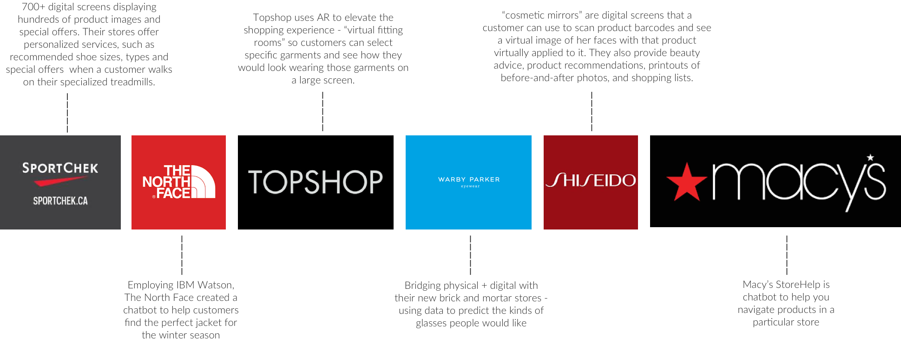
Alleviating shopping pain points through our CUI.
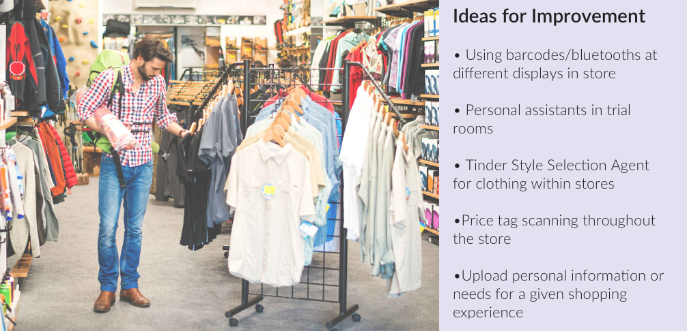initial design
Feature Mapping
We mapped pain points to potential features our CUI could have, categorizing them into the four main functions
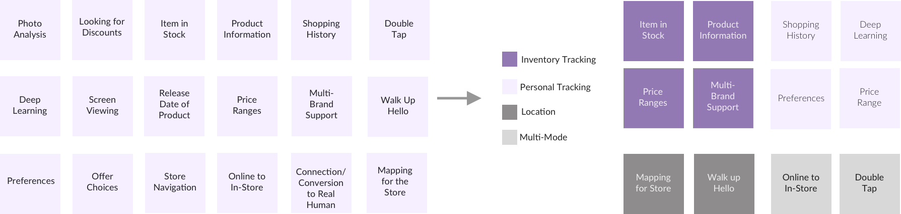
Scenario Flow
There are three main domains in retail shopping: fast fashion stores (H & M), department stores (Macy's), and luxury retailers (Versace). We created a scenario flow and sample scenarios for each domain. See the process book in links for written scenarios.
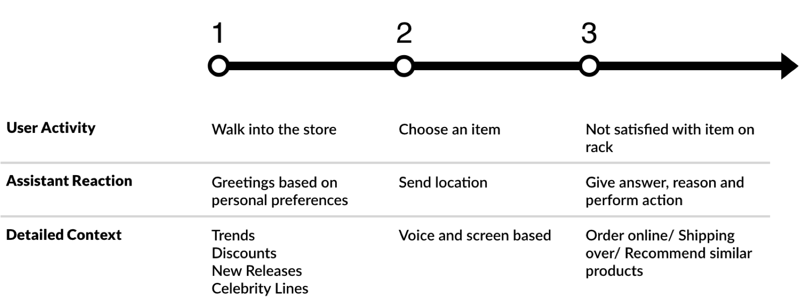
Storyboarding
We relayed the information from our scenarios into storyboards so we could user test our concept and decide which domain to hone in on. We tried to strike a balance in interviewing department store shoppers, luxury shoppers, and fast fashion shoppers.
Initial Sketches
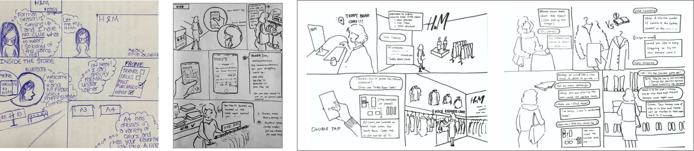Experience Prototyping
We used experience prototyping to identify potential gaps in our initial brainstorm of features and to think about the technical implementation of our CUI - such as modeling feedforward, pre-attentive prompts, utterances, responses, error recovery and session termination.

initial models
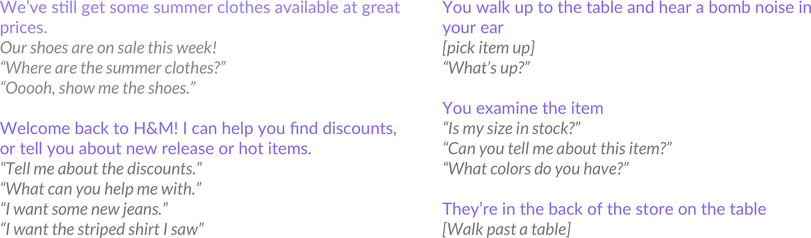
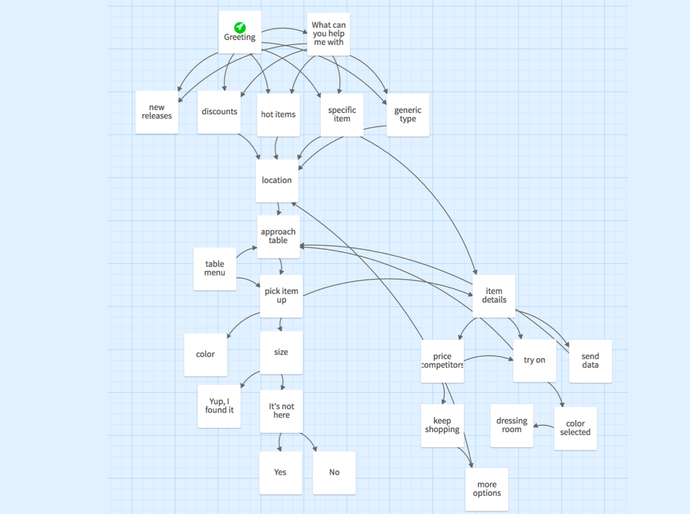
Our first model was created using Twine - a sample end-to-end retail experience
iteration + evaluation
Inspiration from Trunk Club
Trunk Club is a personalized mid- to high-end clothing service that pioneered the at-home try-on model within the men's clothing industry. After a second round of critiques, we were posed with an interesting question - could we create an in-store experience that mimics the personalized recommendations of Trunk Club?
We renamed "sales associates" to "stylists" and revamped their roles: stylists collect the items that users tell their CUI they would like to try one, and add items to their fitting room that complement the users' style, based on selected items and purchase history. In this way "we flipped the store", keeping stylists behind the scenes and having the CUI be the major player on the front stage.
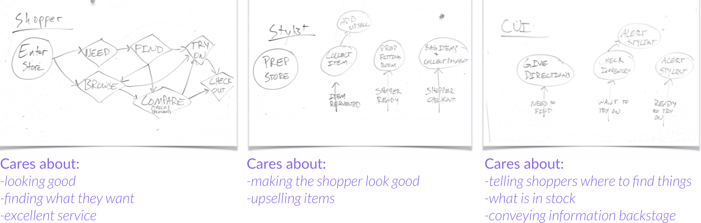
Reframing the service model based on stylists.
Pivoting from Fast Fashion to Department Stores
Our initial hypothesis was that fast fashion stores would benefit the most from a conversational user interface since they tend to have the most difficult customer experience due to excessive inventory and lack of organization. Department stores have a high touch service model, and a need for innovation, so we decided to switch our focus from fast fashion to department stores. Luxury stores were quickly eliminated due to their human interaction, high-touch model.
final concept
Service Blueprint
Modeling Sessions & Dialogues
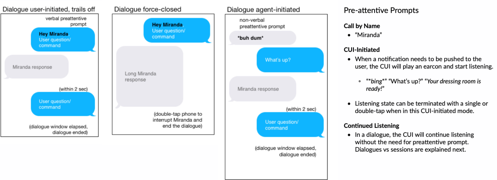Video Scripting
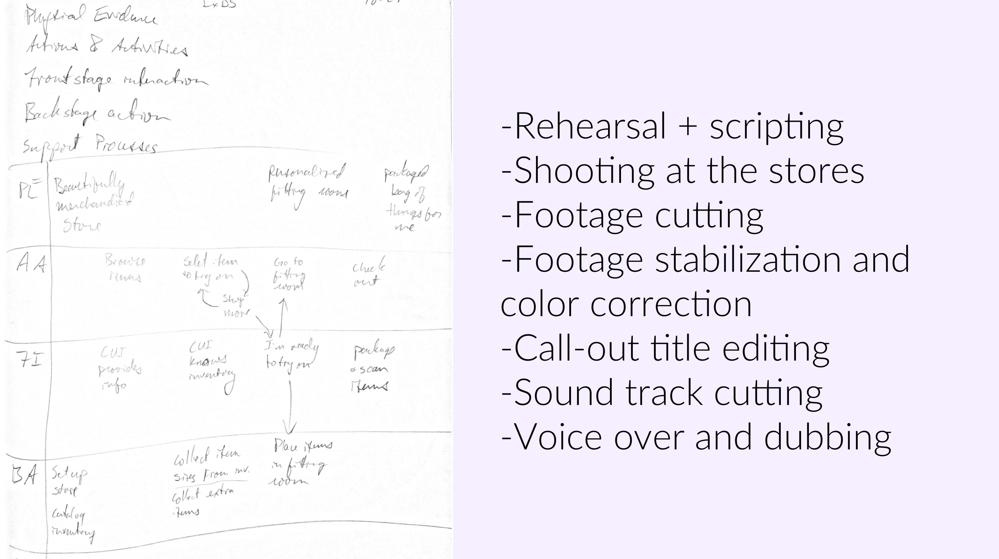
Video Creation
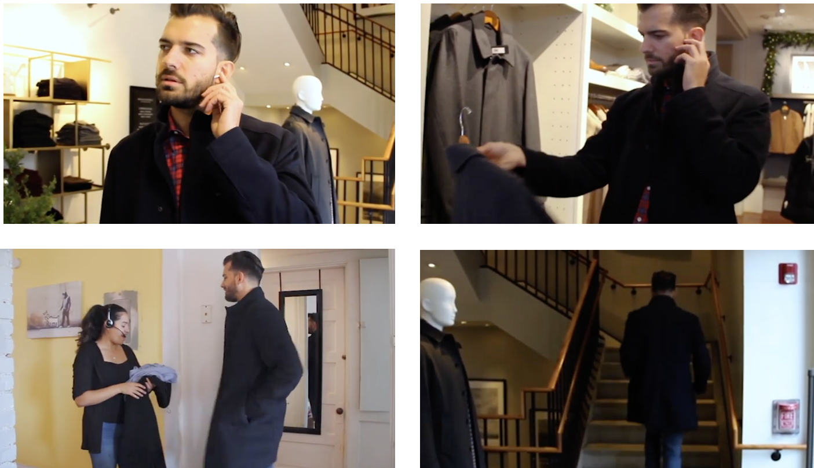04 Reflection